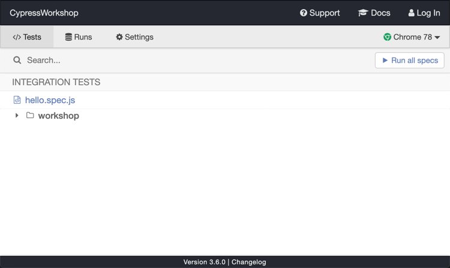
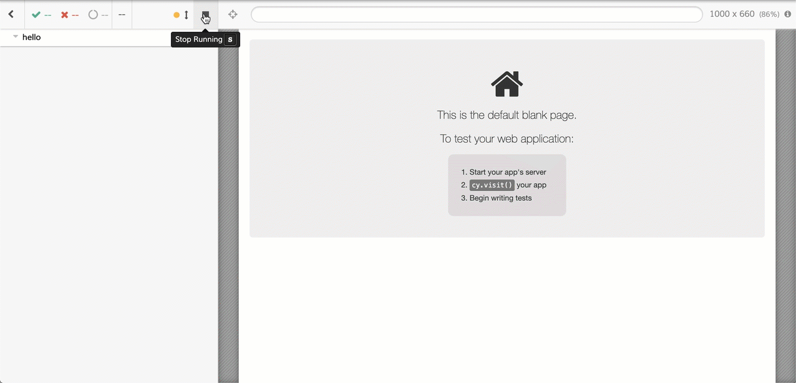

Bienvenue dans ce workshop dédié à Cypress! Nous espérons qu'il vous plaira!
N'hésitez pas à:
git clone https://github.com/rbung/CypressWorkshop.git
cd CypressWorkshop
npm install
npm start
npx cypress open

hello.spec.js
Vous êtes maintenant prêt! 💪
Dans ce test, nous allons tester les principales fonctionnalités proposées par le site. L'objectif est de balayer l'ensemble des pages et de vérifier qu'elles sont correctement affichées. Nous allons aussi valider que les comportements de base fonctionnent correctement.
spec.js, compléter the TODOs.Dans ce test, nous allons tester la fonctionnalité d'authentification de manière exhaustive.
spec.js, compléter the TODOs.visit. Pour y remédier, pensez que vous êtes dans un environnement Mocha : vous avez donc à votre disposition les hooksC'est juste du JavaScript 😉)Dans la première partie du test (celle concernant la partie non authentifié), on peut constater que les assertions sont très fines.
Lorsqu'on lance le test, celui-ci échoue, néanmoins : l'article n'existe pas côté serveur (il a pu être modifié ou autre).
Pour s'afficher, la page article lance 2 requêtes vers le serveur : une pour récupérer les informations relatives à l'article et une
autre pour récupérer les commentaires liés à cet article.
Nous allons utiliser les commandes cy.server et cy.route pour contrôler les appels réseaux qui nous intéressent !
Une fois le premier test passé. Nous allons utilisé la commande cy.route dans les autres tests pour simuler des erreurs (404, 500) ou avoir des temps de réponses différents et ainsi pouvoir facilement voir comment réagit notre site sur des cas limites.
Dans la deuxième partie du test, nous devons être authentifié. La fonctionnalité de login est importante dans notre site. Elle peut être aussi utilisée pour afficher la page de settings par exemple. Pour mutualiser du code à travers les différents tests, nous allons développer une custom command qui nous permettra de nous authentifié facilement dans nos tests.
Si reprendre le code que l'on a vu lors dans notre test de la page login peut être tentant, ce n'est cependant pas la méthode la plus efficace. Plutôt que d'utiliser l'interface pour s'authentifier, nous allons le faire de manière programmatique ! 👨💻
Dans le fichier commands.js qui se trouve dans le répertoire support, la commande login est déjà déclarée pour vous. Utiliser la commande cy.request pour faire une requête POST sur le endpoint d'authentification https://docs.cypress.io/api/commands/request.html puis utiliser la réponse pour récupérer le token et le positionner dans le local storage pour être authentifié d'un point de vue applicatif !
window.localStorage.setItem('jwt', token)
Vous êtes arrivés jusque là dans le temps imparti, bravo! 🎉
Si vous avez encore du temps, nous pouvons voir les sujets suivants :
Utiliser Cypress en local avec une interface graphique, c'est bien. Utiliser nos tests dans le cadre d'une intégration continue, c'est mieux ! Nous allons découvrir comment exécuter nos tests en mode headless, utiliser le dashboard service de Cypress et une intégration continue sur le cloud : CircleCI.
La commande run de Cypress permet de lancer nos tests en mode headless (c'est-à-dire, sans avoir besoin d'interface graphique).
Dans le fichier package.json, définissez un script cypress:run qui va exécuter en mode headless tous les tests contenu dans le dossier cypress/integration/devoxx.
"cypress:run": "cypress run -s 'cypress/integration/devoxx/**'"
npm run cypress:run
Avec l'option record, nous allons pouvoir enregistrer différentes exécutions :
Log In en haut à droiteRuns de l'interface, ensuite cliquer sur le bouton Set up project to recordUn projectId sera défini et sera automatiquement ajouté à votre fichier de configuration Cypress cypress.json 👌. Pensez à commité ce fichier.
Une ligne de commande cypress run sera affiché avec le paramètre key positionné. Prenez cette ligne de commande et exécutez-la dans votre terminal : votre test est en train d'être enregistré !
Dans cette partie, nous allons utiliser CircleCI. Cypress peut évidemment s'interfacer avec de nombreuses solutions de CI (voir les exemples). Cependant, la tâche est plus facile avec CircleCI grâce à l'orbe Cypress !
Add projects)CYPRESS_RECORD_KEY avec la clé qui a été généré en 1ère partieComment ça marche ?
circle.ymlDans ce test, nous allons tester un composant de manière isolé, en faisant le focus sur la bannière présente lorsqu'il n'y a pas d'utilisateur connecté.
L'application étant en React, nous allons utiliser le plugin cypress-react-unit-test
spec.js, compléter the TODOs.⚠️ La solution de l'exercice se trouve dans le fichier answer.js ⚠️
Nous espérons que vous avez apprécié ce workshop et que vous allez très vite utiliser Cypress!
https://openfeedback.io/3BQH3sLpx0EfLHHC7Wng/2019-11-15/33
Remplissez le questionnaire: https://link.cypress.io/rodolphe-f
Sur Twitter